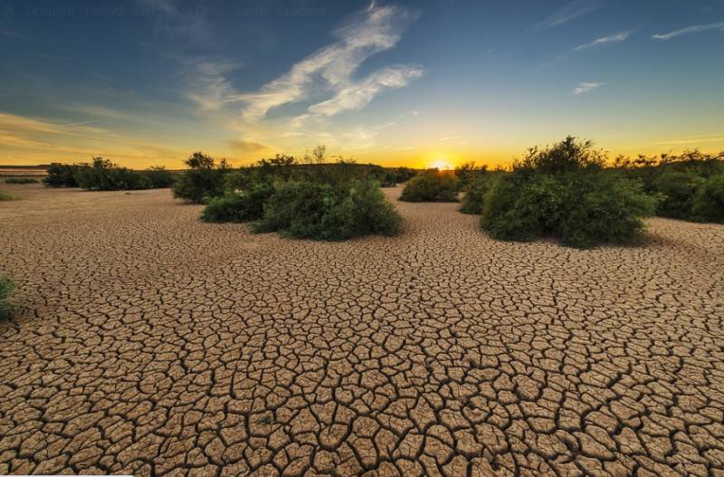

Las Sequías del Sur
Actualmente, España está enfrentando sequías muy severas, especialmente en regiones como Cataluña. La falta de lluvia ha hecho que sea mucho más difícil para millones de personas conseguir suficiente agua para sus necesidades diarias. Algunos pueblos han tenido que limitar el uso de agua para cosas como beber, cocinar y limpiar. Los ríos y embalses están muy bajos, y esto también ha creado grandes problemas para la agricultura. Los agricultores están luchando por mantener sus cultivos vivos, y muchos han perdido gran parte de sus cosechas. Uno de los mayores impactos ha sido en la producción de aceite de oliva, que es uno de los productos más famosos e importantes de España. La sequía ha provocado una gran caída en la cantidad de aceite de oliva que se produce, lo que perjudica a los negocios locales y podría afectar la posición de España como uno de los principales productores de aceite de oliva en el mundo.
Hubo algunas lluvias a principios de 2025 que ayudaron un poco, pero no fueron suficientes para reparar el daño. La sequía sigue y el futuro se ve incierto. Si el clima seco continúa, España podría enfrentar problemas aún mayores con la producción de alimentos, precios de comida más altos, más escasez de agua y daños al medio ambiente. Los científicos dicen que el cambio climático está empeorando estas sequías y que, sin una acción fuerte para ahorrar agua y combatir el cambio climático, España podría enfrentar un clima aún más extremo en los próximos años.